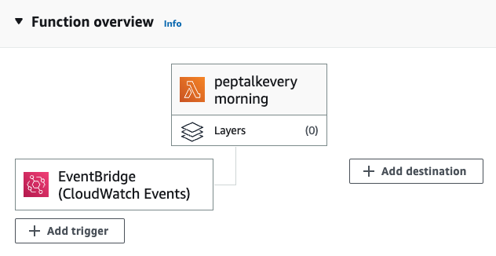
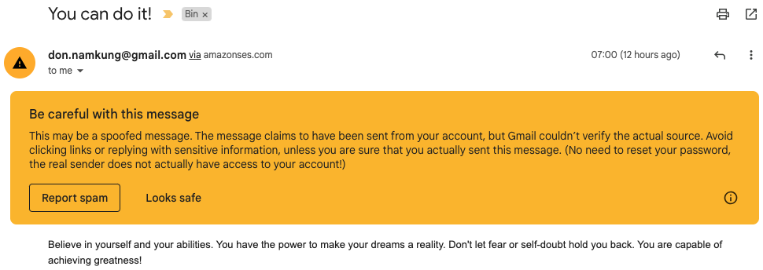

<div class="portfolio-modal modal fade" id="portfolioModal2" tabindex="-1" aria-labelledby="portfolioModal2" aria-hidden="true">
            <div class="modal-dialog modal-xl">
                <div class="modal-content">
                    <div class="modal-header border-0"><button class="btn-close" type="button" data-bs-dismiss="modal" aria-label="Close"></button></div>
                    <div class="modal-body text-center pb-5">
                        <div class="container">
                            <div class="row justify-content-center">
                                <div class="col-lg-8">
                                    <!-- Portfolio Modal - Title-->
                                    <h2 class="portfolio-modal-title text-secondary text-uppercase mb-0">Inspirational Email Sender</h2>
                                    <!-- Icon Divider-->
                                    <div class="divider-custom">
                                        <div class="divider-custom-line"></div>
                                        <div class="divider-custom-icon"><i class="fas fa-star"></i></div>
                                        <div class="divider-custom-line"></div>
                                    </div>
                                    <!-- Portfolio Modal - Image-->
                                    
                                    
                                    <!-- Portfolio Modal - Text-->
                                    <!-- <p class="mb-4 text-start"><strong>Project Title:</strong> Inspirational Email Sender</p> -->
                                    <p class="mb-4 text-start"><strong>Project Description:</strong> This AWS Lambda function sends an inspirational email to the specified recipient using Amazon Simple Email Service (SES). The function is written in Python and leverages the Boto3 library to interact with AWS services.</p>
                                    <p class="mb-4 text-start">The Lambda function generates a random inspirational quote from a predefined list and creates an email message with the quote as the body. The email is then sent using Amazon SES as the SMTP server. This function is a great example of using serverless architecture to perform a specific task like sending personalized, automated emails without managing any underlying infrastructure.</p>
                                    <p class="mb-4 text-start"><strong>Key Technologies:</strong></p>
                                    <ul class="text-start">
                                        <li>AWS Lambda</li>
                                        <li>Amazon Simple Email Service (SES)</li>
                                        <li>Python</li>
                                        <li>Boto3</li>
                                    </ul>
    <pre><code class="language-python">
    import boto3
    import smtplib
    from email.mime.text import MIMEText
    import random
    
    # Set the SMTP server and sender/receiver email addresses
    SMTP_SERVER = "email-smtp.ap-southeast-2.amazonaws.com"
    SENDER = "don.namkung@gmail.com"
    RECIPIENT = "don.namkung@gmail.com"
    
    peptalk = random.choice(
        [
            "A", "B", "C",
        ]
    )
    
    def lambda_handler(event, context):
        # Create the email message
        message = MIMEText(peptalk)
        message["Subject"] = "You can do it!"
        message["From"] = SENDER
        message["To"] = RECIPIENT
    
        # Send the email using the Amazon SES SMTP server
        client = boto3.client('ses', region_name="ap-southeast-2")
        response = client.send_raw_email(
            Source=SENDER,
            Destinations=[RECIPIENT],
            RawMessage={'Data': message.as_string()}
        )
    
        # Print the response
        print("Email sent! Message ID:", response["MessageId"])
    </code></pre>                                        
                                    <button class="btn btn-primary" data-bs-dismiss="modal">
                                        <i class="fas fa-xmark fa-fw"></i>
                                        Close Window
                                    </button>
                                </div>
                            </div>
                        </div>
                    </div>
                </div>
            </div>
        </div>

        